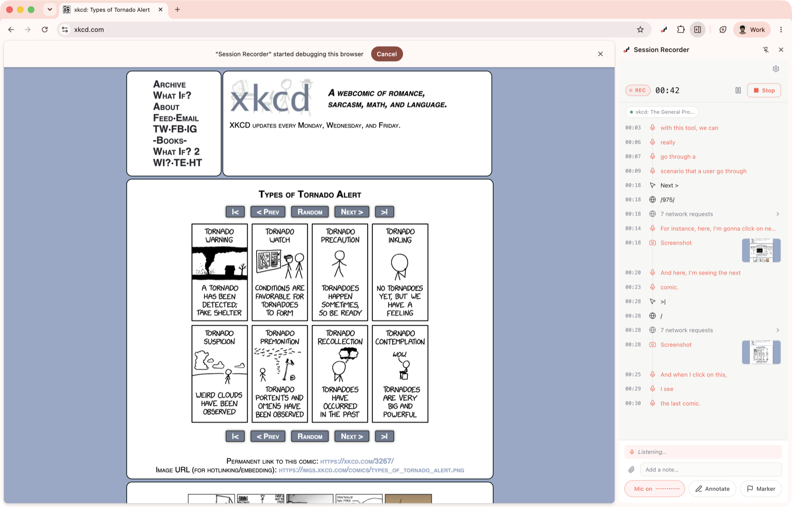
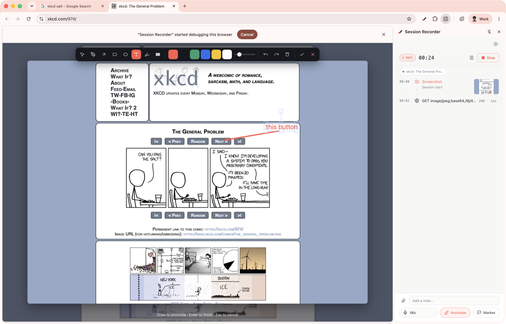
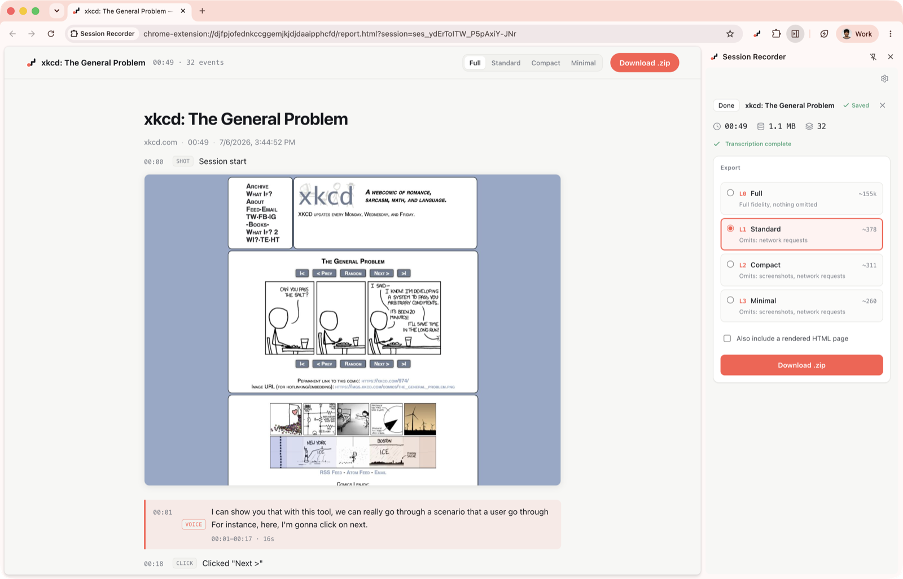

Record a bug.
Hand your agent the whole story.
Reproducing a bug for an AI coding agent means describing a hundred little things: what you clicked, what the app requested, the error in the console, what you expected. Session Recorder captures all of it while you use your app, then exports one clean report your agent can read.

How it works
Hit record
Open the side panel and record the tab you are on. A calm live timeline shows everything being captured, in order.
Reproduce the bug
Use your app like normal. Talk out loud, drop a marker at the moment it breaks, and draw on the screen to point at it.
Export and paste
Choose how much detail to include, download a zip, and hand the report to your agent. That is the whole loop.
Every step, in order
See exactly what happened
Clicks, typing, text selections, page changes, network requests and their responses, console errors, screenshots, and video all land on one timeline in the order they happened. Repeated background requests fold away, so the story stays readable.
Point at the problem
Draw on the page
Freeze the screen and mark it up with arrows, boxes, highlights, and text. The annotated image goes straight into the report, so your agent sees the exact thing you meant, not a vague description of it.

Right-sized for any model
As much detail as you need
Long sessions get big. Pick a level — Full, Standard, Compact, or Minimal — and see a live token estimate for each, so the report fits your model's context window. The same recording can be re-exported at any level later.

Clicks and typing
Every interaction, with the element you touched.
Network activity
Requests, responses, timing, and failures.
Console and errors
The errors and exceptions your app threw.
Screenshots
Captured as you go, tuned to how often you want.
Video, with sound
Record the tab as video, pause and resume as you go. It plays inline in the report.
Voice and annotations
Your spoken notes and your on-screen markup.
Text you select
Highlighting something on the page puts it in the story.
New tabs
When the app opens a tab, recording follows you there and back.
An API spec
Turn it on and the export includes an OpenAPI file built from your app's requests.
Files you upload
Grabbed automatically, with the context around them.
Secrets are hidden by default: passwords, auth headers, and tokens are masked before anything is saved. Everything stays on your machine; nothing is uploaded unless you turn on voice transcription and add your own key.
Install in a minute
- Download the zip and unzip it.
-
Open
chrome://extensionsand turn on Developer mode. - Click Load unpacked and pick the unzipped folder.
- Click the toolbar icon to open the side panel, then Record.
While recording, Chrome shows a small "being debugged" banner. That is expected: it is how the extension watches your app's network and console.